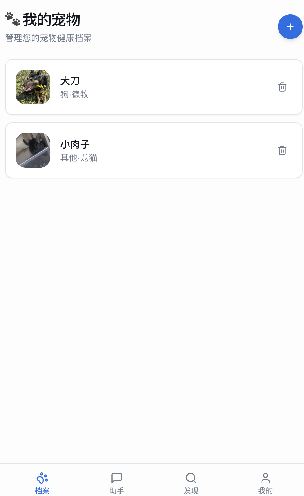
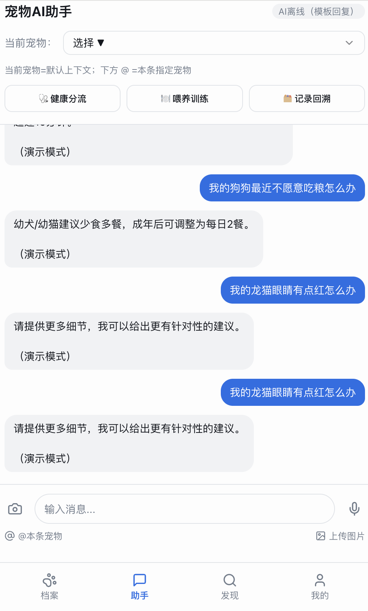
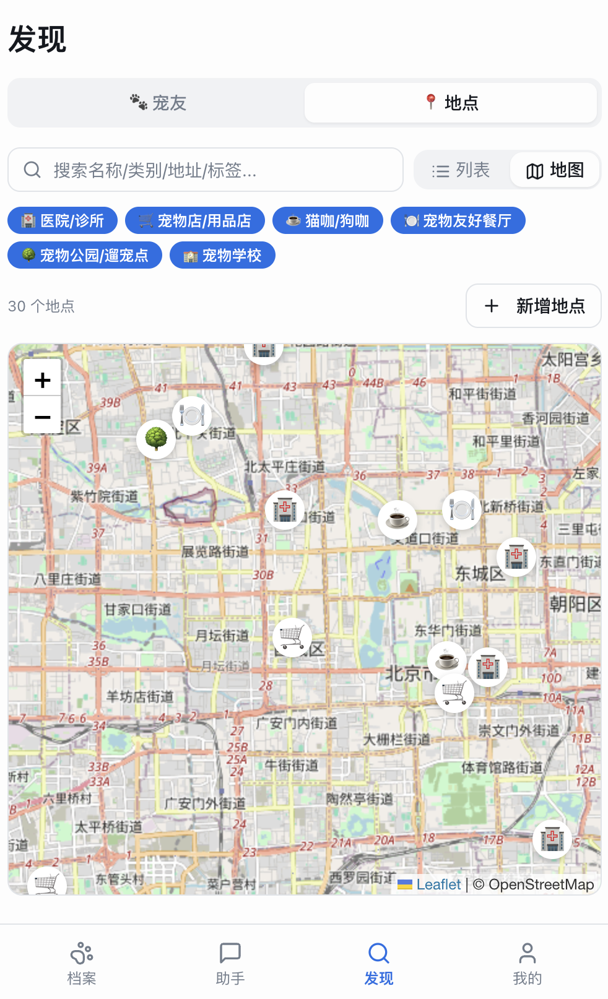

宠物伴侣多维社交与 AI 健康管理 MVP——从大型犬主人的真实困境出发，构建 LBS 匹配漏斗与轻量化 AI 健康助手。
我养了一只大型犬，搬家换了新小区后长期找不到合适的狗友。表面上是「找不到其他狗」，实际问题更复杂——遇到小型犬，我的狗还没靠近对方就开始狂叫，氛围剑拔弩张；好不容易遇到体型相当的大型犬，还要看性别，母狗和公狗之间有特殊的社交张力；性格也是变量，遇到攻击性强的大型犬两条狗都会受伤。
随机遇见的成功率极低。现有产品（小红书宠物圈、陌生人匹配类App）全是内容平台逻辑，没有任何产品解决「找到条件精准匹配的宠物伙伴」这个问题。
这个产品不是一次性规划出来的，而是沿着用户数据自然生长的路径迭代：



筛选维度：体型（大/中/小）、性别、年龄段（幼年/成年/老年）、性格标签（活泼/安静/友善/敏感）、距离范围。用户先筛选再见面，把「见了才发现不合适」的成本降到最低。双方互赞后进入聊天内闭环。
支持医院/诊所、宠物店、猫咖/狗咖、宠物友好餐厅、宠物公园等分类，列表视图和地图视图双入口。宠物场景有强烈的地理属性，遛狗时顺手查周边是高频真实需求。
疫苗记录、病史、体重趋势，解决纸质记录本易丢失的痛点。档案数据同时作为 AI 助手的上下文基础——当 AI 知道「这只狗3岁、德牧、上个月打过疫苗」，回答会更有针对性。
对话式交互，支持选择「当前宠物」作为上下文。三个快捷入口：健康分流、喂养训练、记录回溯。
v1 版本纯前端部署在 Vercel，使用 localStorage 存储所有用户数据（宠物档案、对话记录），支持 JSON 导出备份。
这个选择的逻辑：MVP 阶段快速验证产品核心功能优先，代价是没有跨设备同步和用户行为追踪。这是有意识的取舍，不是技术能力不足。下一版本将引入账号体系获取量化数据。
面向 30+ 目标用户完成可用性验证。由于 v1 无后端、无账号体系，无法追踪留存数据，用户验证以定性访谈和主观反馈为主。